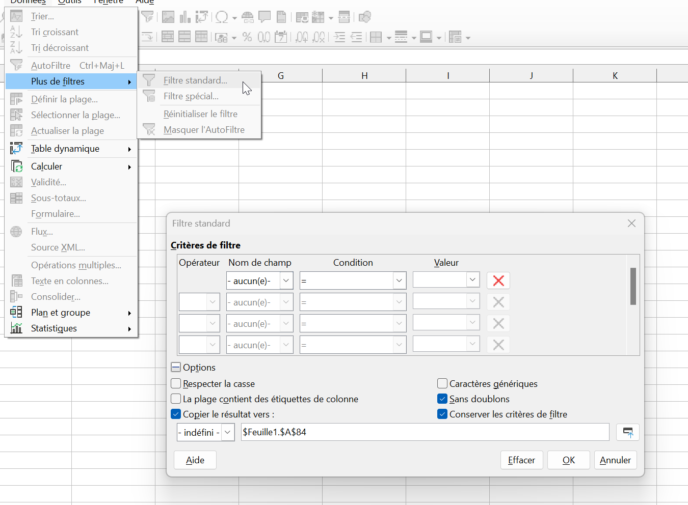
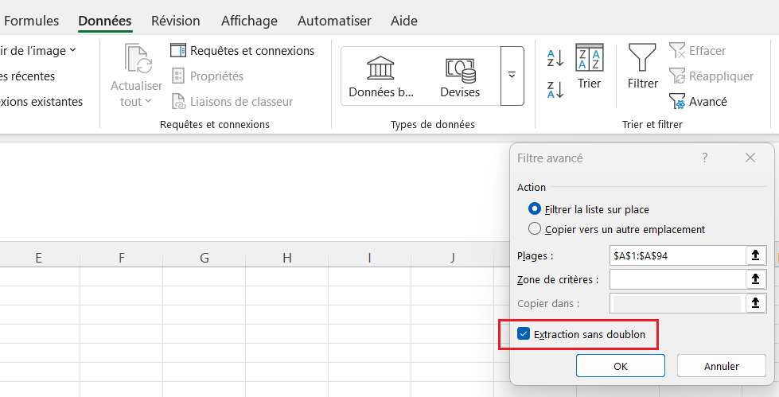
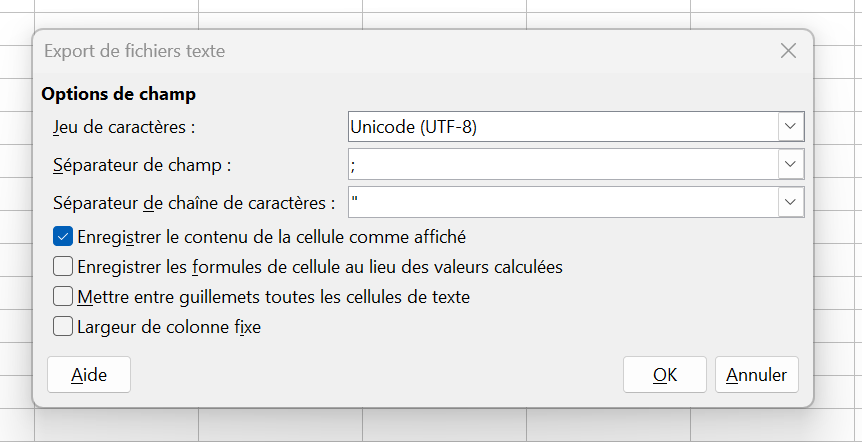
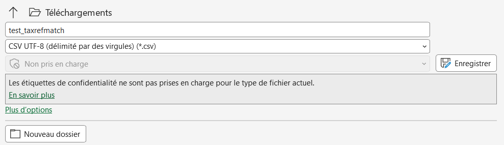
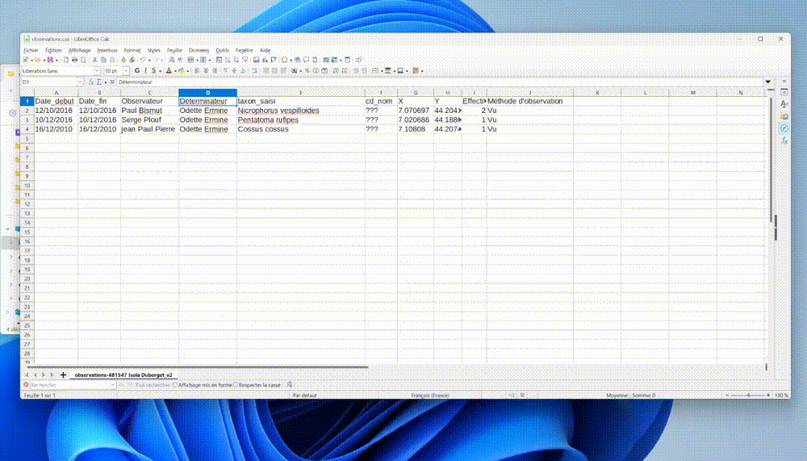
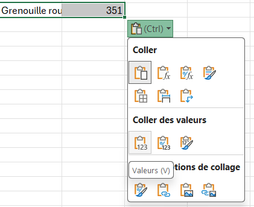

Taxrefmatch et cd_nom
Pour que les données naturalistes puissent être partagées et échangées, chaque taxon est associé à un identifiant numérique unique : le cd_nom.
Or les relevés de terrain sont faits avec un nom : il faut donc retrouver le cd_nom correspondant. Taxrefmatch le fait pour vous, et LibreOffice permet de l'appliquer à tout un tableau.
Afin que les données naturalistes puissent être partagées et échangées, chaque taxon est associé à un identifiant numérique unique qui s'appelle le cd_nom. Ce numéro est extrêmement important puisqu'il permet de suivre les observations indépendemment des changements de noms, d'orthographe, de taxonomie.
Or, de façon générale, les relevés naturalistes sont faits en utilisant un nom. Il faut donc leur associer un cd_nom.
Taxrefmatch est un outil qui permet à partir d'un nom scientifique de taxon de retrouver le cd_nom associé, et donc l'ensemble de ses propriétés (nom scientifique valide, niveau taxonomique etc...).
En combinant taxrefmatch et les formules disponibles sur LibreOffice/Excel il est possible d'automatiser et de simplifier le processus associant à chaque nom de taxon saisi un cd_nom correct et unique.
Le principe
Le processus se fait en trois étapes :
| Étape | Ce qu'on fait | Outil |
|---|---|---|
| 1. Lister | Récupérer la liste des noms de taxons observés, sans doublons | LibreOffice Calc / Excel |
| 2. Faire correspondre | Obtenir le cd_nom de chaque nom | Taxrefmatch |
| 3. Appliquer | Associer un cd_nom à chaque observation | LibreOffice Calc / Excel (RECHERCHEV) |
Toujours vérifier les résultats
Un outil automatique comme Taxrefmatch se trompe parfois.
Relisez les correspondances avant de les utiliser, pour ne pas introduire d'erreurs dans les relevés.
Situation de départ
Vous avez un tableau d'observations, par exemple observations.csv :
| Date | Observateur | Taxon | x | y |
|---|---|---|---|---|
| 12/10/2016 | Paul Bismut | Nicrophorus vespilloides | 7.070697 | 44.204141 |
| 10/12/2016 | Serge Plouf | Cossus cossus | 7.020686 | 44.188697 |
| 16/10/2012 | Jean-Paul Pierre | Glomeris klugii | 7.10808 | 44.207472 |
| ... | ... | ... | ... | ... |
Il manque le cd_nom pour pouvoir enregistrer ces observations en base de données. D'autres informations peuvent aussi s'ajouter : le déterminateur, les effectifs, la méthode d'observation...
Étape 1 : lister les taxons sans doublons
- Créez un nouveau fichier
input-taxrefmatch.csv. - Copiez la colonne des noms de taxons de
observations.csvdans la première colonne du nouveau fichier. -
Sur LibreOffice :
-
Cliquez sur Données > Plus de filtres > Filtre standard....

-
Dans la boîte de dialogue :
- réglez le premier nom de champ sur
- aucun -; - cochez Sans doublon ;
- cochez Copier les résultats vers et choisissez une cellule vide.
- réglez le premier nom de champ sur
-
-
Sur Excel :
-
Cliquez sur Données > Avancé (dans l'emplacement des Filtres)

-
Dans la boîte de dialogue :
Filtrer la liste sur placedoit être coché- La plage correspond à la colonne sélectionnée
- Cochez extraction sans doublon
-
Vous obtenez la liste de chaque taxon une seule fois.
Étape 2 : passer par Taxrefmatch
Méthode automatisée : Taxref Matcher du Mercantour
Cliquez sur Upload pour récupérer les cd_nom de votre fichier fraichement anti-doublonné.
Mettre au format Taxrefmatch
Le fichier envoyé à Taxrefmatch a trois colonnes :
nom_complet |
classification |
fk |
|
|---|---|---|---|
| Contenu | Le nom du taxon | Les taxons supérieurs, séparés par des virgules (voir la documentation Taxrefmatch) | Un identifiant libre |
| Obligatoire | OUI | Non, mais aide à départager | Non, on peut la laisser vide |
Exemple :
| nom_complet | classification | fk |
|---|---|---|
| Helix lapicida Linnaeus, 1758 | mollusca,gastropoda,helicidae | |
| Cyclops minutus O.F. Müller, 1776 |
Commencez simple
Un premier essai avec la colonne classification vide est possible. Certaines correspondances peuvent alors échouer ou être fausses : on complète ensuite pour celles-là.
Enregistrer et envoyer
-
Enregistrez le fichier en CSV, en choisissant le point-virgule comme séparateur de champ ; format CSV UTF-8 (délimité par des virgules) dans Excel

Sous LibreOffice

Sous Excel
-
Envoyez-le sur Taxrefmatch.
Le séparateur compte
Avec une virgule ou une tabulation, Taxrefmatch ne lit pas les colonnes correctement.
Étape 3 : récupérer les cd_nom dans le tableau
Préparer le fichier de résultats
- Taxrefmatch fournit un fichier
résultats.csv: renommez-le entaxrefmatch.csv. - Ouvrez-le et renommez sa première feuille en
taxrefmatch. - Relisez-le et corrigez-le si besoin. Quand Taxrefmatch propose plusieurs options pour un même taxon, supprimez les lignes erronées.
- Dans
observations.csv, créez une nouvelle colonnecd_nom.
Écrire la formule
La formule RECHERCHEV de LibreOffice ou Excel prend la valeur d'une cellule, la cherche dans la première colonne d'une plage, et renvoie la valeur d'une autre colonne sur la même ligne. Ici : elle cherche le nom du taxon dans taxrefmatch.csv et renvoie son cd_nom.
| Élément | À remplacer par | Pour notre cas |
|---|---|---|
| A | La cellule qui contient le nom du taxon saisi | E2 |
| B | Le chemin vers taxrefmatch.csv, puis la feuille et la plage de données |
voir ci-dessous |
| C | Le numéro de la colonne à renvoyer dans la plage | 4 (le cd_nom est la 4ᵉ colonne, si la plage va du nom au cd_nom) |
| D | Le mode de recherche | 0 (correspondance exacte) |
Le paramètre B s'écrit de cette façon :
| Partie | Rôle |
|---|---|
'file:///C:/Users/.../taxrefmatch.csv' |
Le chemin vers le fichier, entre apostrophes, avec des / |
#$taxrefmatch |
Le nom de la feuille, précédé de #$ |
.$A$1:$D$99 |
La plage de données où chercher. Les $ verrouillent la plage pour copier la formule sans la décaler : appuyez sur F4 lorsque le curseur est sur 'A1' et 'D99' pour écrire les $ à votre place |
Exemple complet

Étendre la formule et la figer
-
Etendre : copiez la formule sur toute la colonne
cd_nom: cliquer/glisser ou copier/coller. -
Figer : les cd_nom deviennent des nombres fixes, qui ne dépendent plus du fichier
taxrefmatch.csv- Sur LibreOffice : sélectionnez la colonne
cd_nom, puis Données > Calculer > Formules en valeurs. - Sur Excel : copier toute la colonne
cd_nom, coller là à côté, cliquez sur la flèche d'Options de collage et sélectionnez Valeurs uniquement (raccourci Ctrl puis V): cette nouvelle colonne est indépendante, vous pouvez supprimer la colonne de départ.
- Sur LibreOffice : sélectionnez la colonne
Certaines correspondances peuvent avoir échoué
Vérifiez les cases en erreur (#N/A). Dans ce cas :
- réessayez en complétant autrement la colonne
classificationavant de soumettre à Taxrefmatch ; - ou complétez à la main depuis le site de l'INPN.
Bonnes pratiques
| Réflexe | Pourquoi |
|---|---|
Garder une copie de observations.csv d'origine |
On peut recommencer en cas d'erreur |
Relire taxrefmatch.csv avant la formule |
Les homonymes et les doublons faussent les cd_nom |
| Convertir les formules en valeurs | Le fichier reste valable si taxrefmatch.csv est déplacé |
| Contrôler quelques lignes à la main | Un résultat qui « s'affiche » n'est pas forcément correct |
Séparateur ; pour tous les CSV |
Évite les colonnes mal découpées |
En cas de problème
| Symptôme | Cause probable | Solution |
|---|---|---|
#N/A dans la colonne cd_nom |
Le nom n'est pas dans taxrefmatch.csv, ou n'est pas écrit à l'identique |
Vérifiez l'orthographe, les espaces en trop, et la ligne dans taxrefmatch.csv |
Err:502 ou #REF! |
Chemin du fichier ou nom de feuille incorrect | Vérifiez le chemin (/, apostrophes) et le nom de la feuille (taxrefmatch) |
| La formule renvoie un mauvais cd_nom | Colonne C mal choisie, ou doublons dans taxrefmatch.csv |
Contrôlez que C = 4, et supprimez les lignes erronées |
| Taxrefmatch ne lit pas mon fichier | Mauvais séparateur de champ | Réenregistrez en CSV avec le point-virgule |
| La plage s'est décalée en copiant la formule | $ oubliés dans la plage |
Écrivez $A$1:$D$99, pas A1:D99 |
| Les cd_nom disparaissent à la réouverture | Formule non convertie, fichier source déplacé | Formules en valeurs avant de fermer |
| Taxrefmatch propose plusieurs taxons | Nom ambigu | Supprimez les lignes erronées, ou précisez la classification |